Debrief as a team
Driver, coach and crew look at the same charts on a laptop or a big screen, minutes after the session.
The free companion app. It helps your phone start wireless Android Auto, carries your Racing sessions home, and can time you with your phone’s sensors.
Free · Android 7.0+ phones
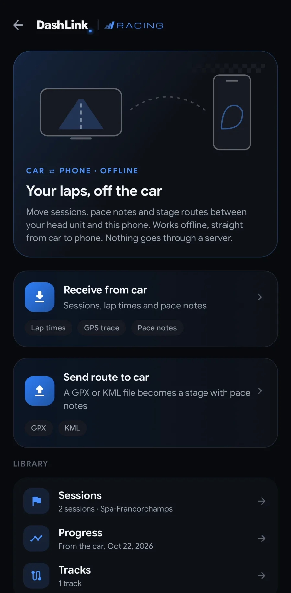
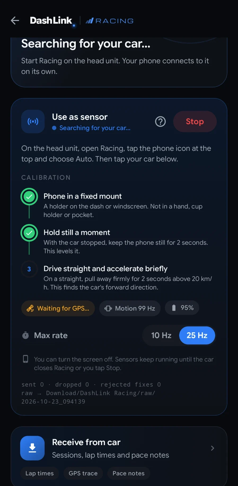
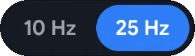
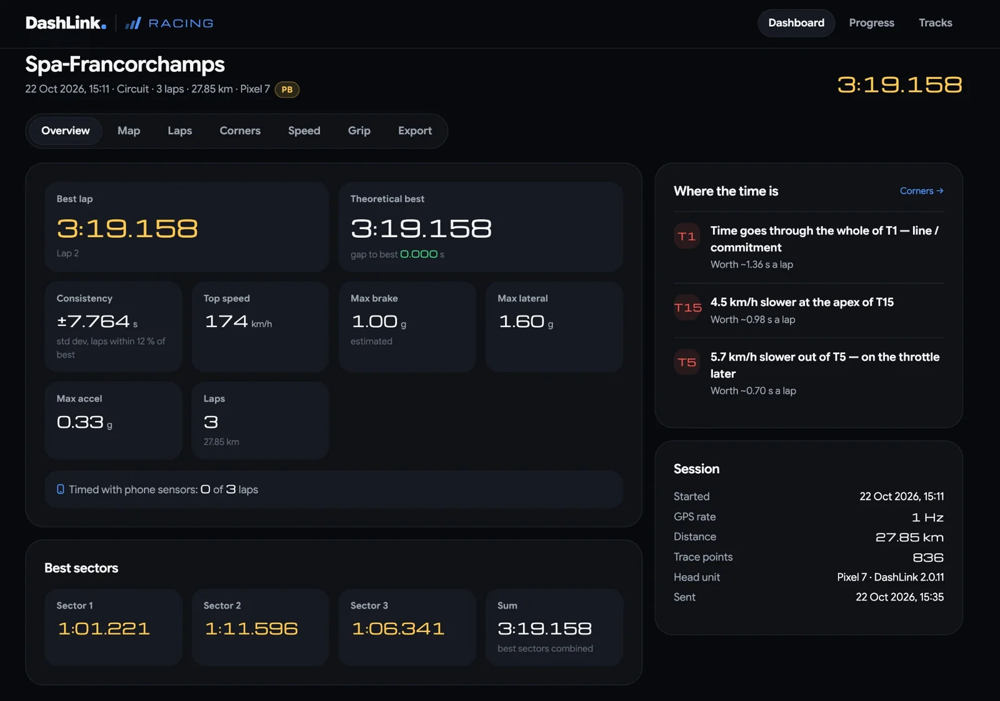
DashLink Wireless helps your phone start a wireless Android Auto connection with your head unit running DashLink.
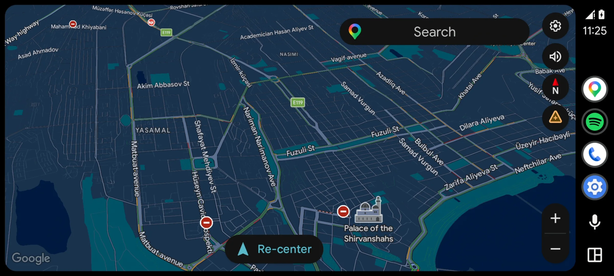
Sessions, laps, tracks and pace notes go from the head unit to your phone over a direct, encrypted link. No internet, no cloud. Confirm a 4-character code once.
Every session with the car’s analysis, personal-best timelines per track, 0–100 history and your tracks.
Track and rally sessions need Pro on the head unit.


Turn on Browser view in DashLink Wireless and open your sessions on any laptop or tablet: big charts, every lap, every corner. Made for debriefs with your coach and crew. Track and rally sessions need Pro on the head unit.
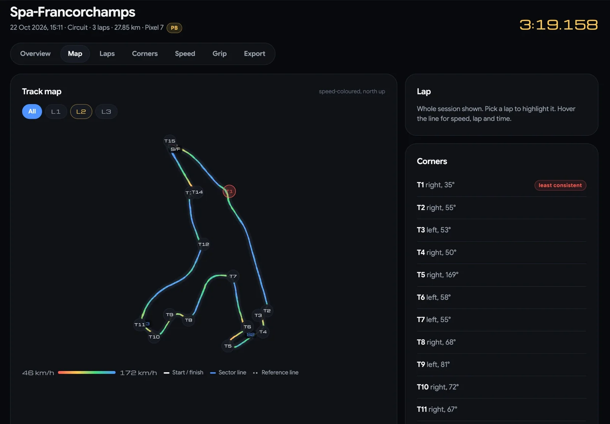
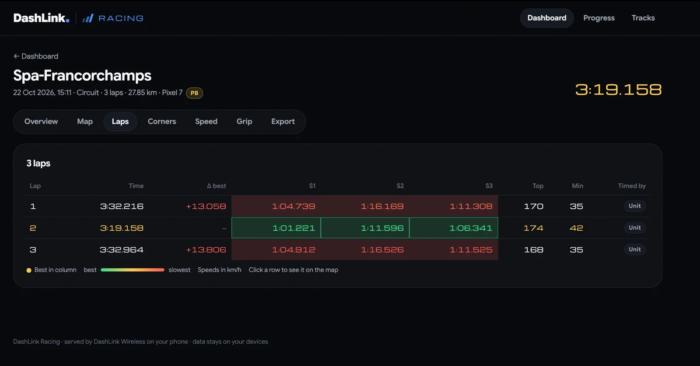
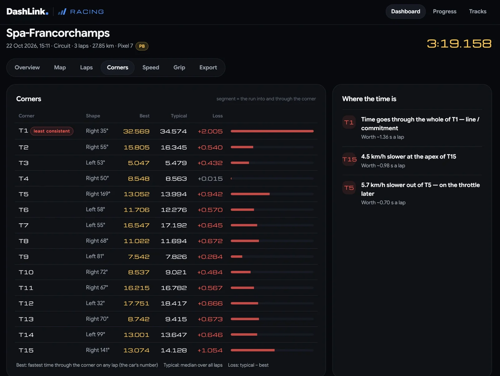
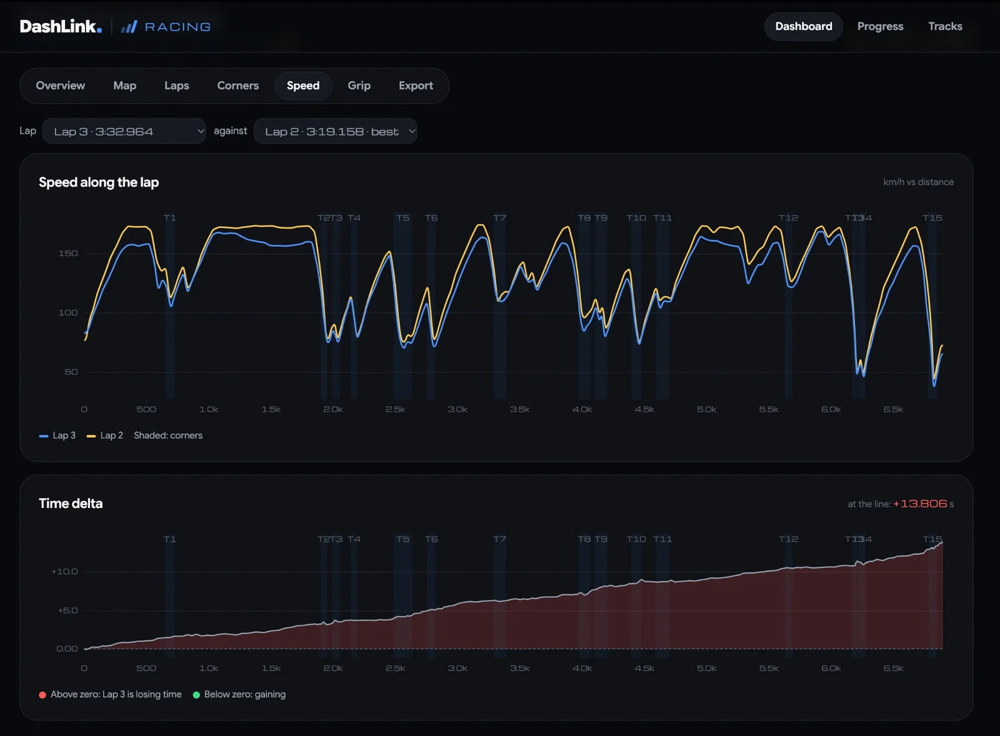
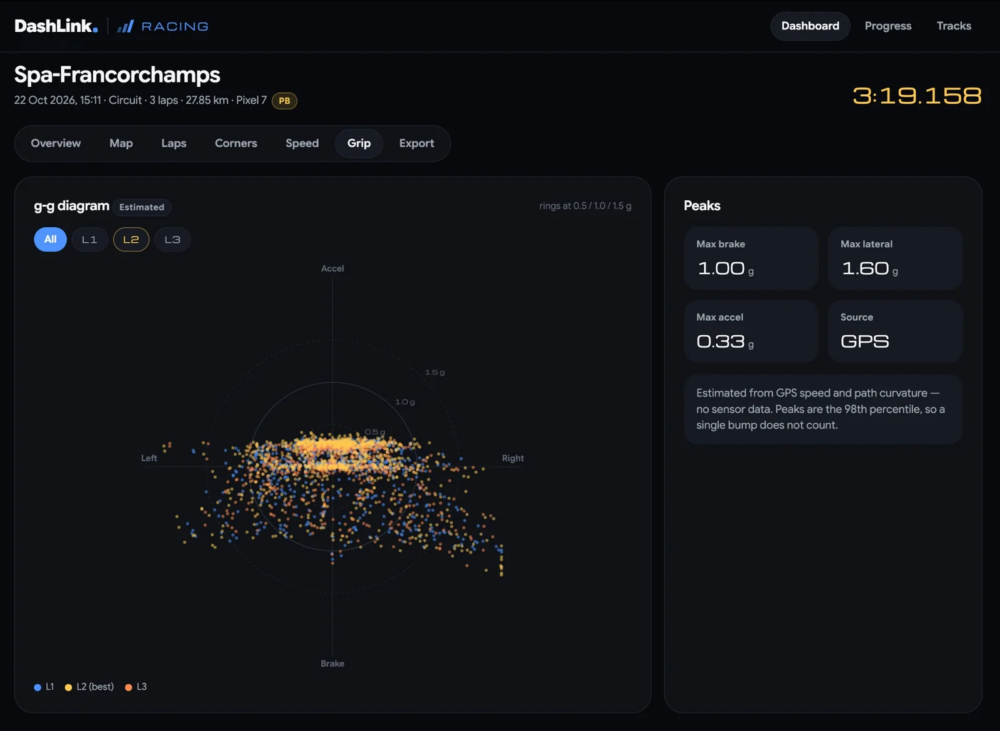
DashLink ranks the corners that cost you most, says why in plain words, and what each is worth per lap.
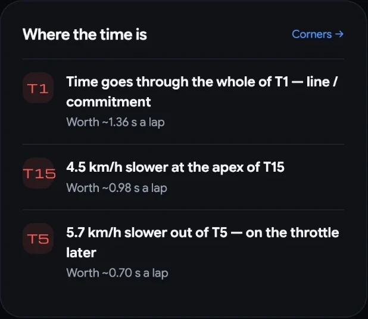
Best against typical for every corner. The bar is what you lose there on an average lap.
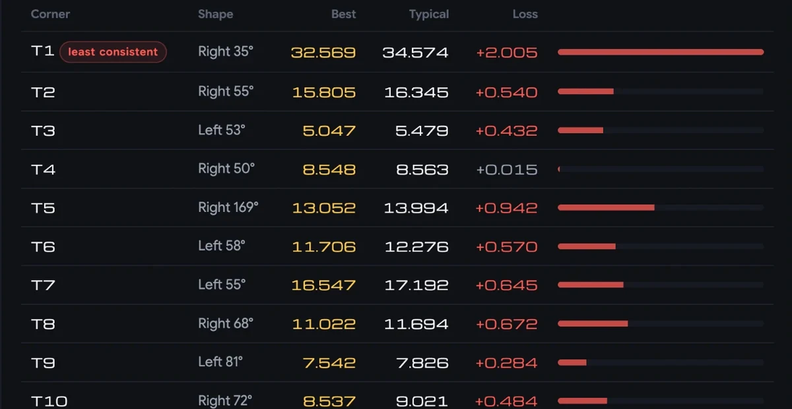
Pick two laps. The traces show who carries more speed where; the delta shows exactly where time comes and goes.
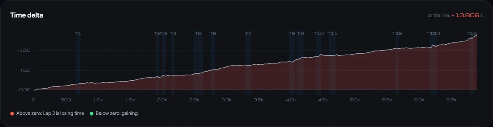
Every lap and sector side by side, coloured from best to slowest. Click a row to see that lap on the map.
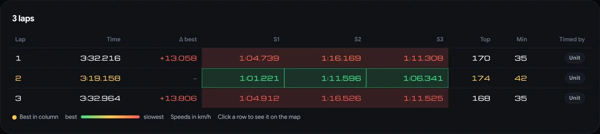
Braking, cornering and acceleration on one plot. Estimated from GPS when phone sensors weren’t used.
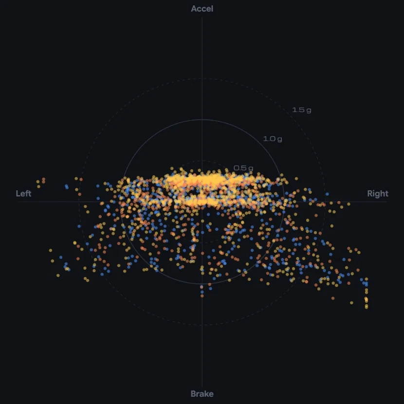
The line coloured by speed, with every corner numbered. Pick a lap to highlight it.
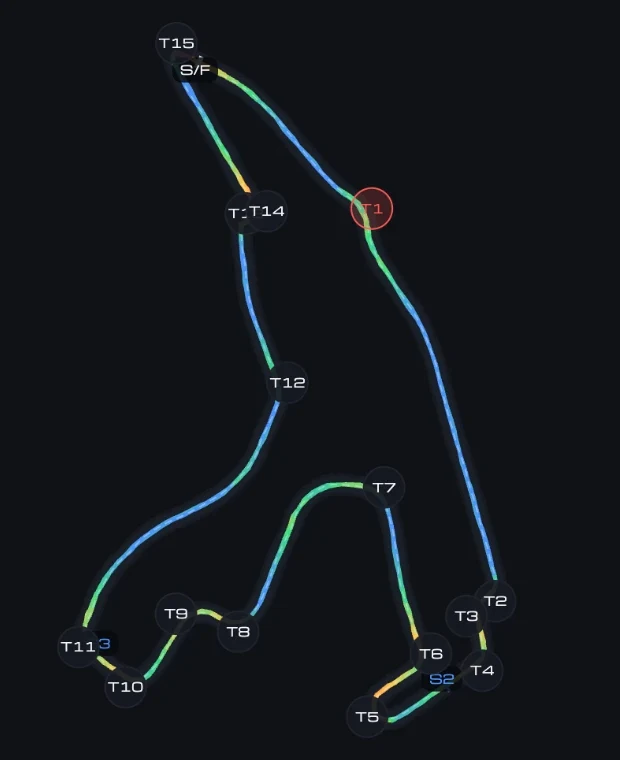
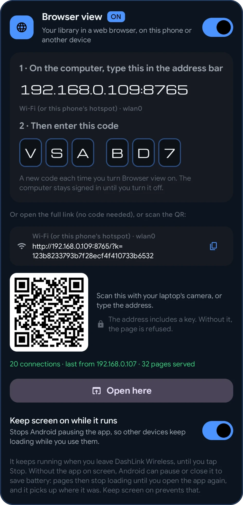
12345Your phone serves the pages itself, over your Wi-Fi or its own hotspot.

Driver, coach and crew look at the same charts on a laptop or a big screen, minutes after the session.
Point at the corner and the number, “T1, worth about 1.4 s a lap”, instead of guessing.
Change pressures or setup, run again, and compare the laps side by side.
Personal bests per track over time, so you can see the work paying off.
Served by your phone, only while the app runs. No account, no cloud. Other devices need the code.
Any modern browser on a laptop or tablet. Export GPX or CSV when you want to keep it.
A typical head unit reads its GPS about once a second. At 120 km/h that’s one reading every 33 metres, and a lot happens in a corner in 33 metres. Mount a phone running DashLink Wireless and its GPS and motion sensors fill in the gaps.
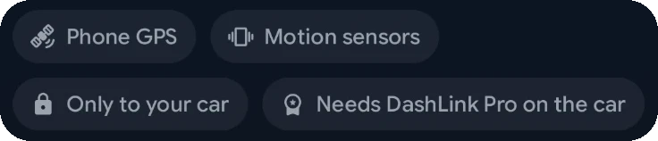
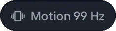
Drag the speed, then switch between the car’s GPS alone and the car with your phone.
Illustration. Many head units’ GPS updates about once a second; yours may be faster. The phone sends up to 25 readings a second, at 10 or 25 Hz.
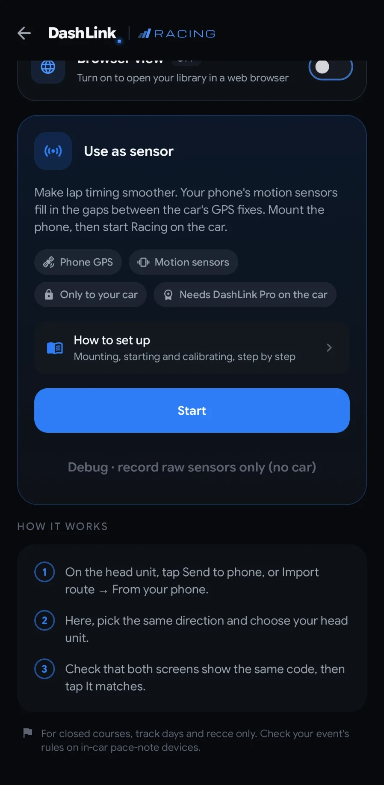
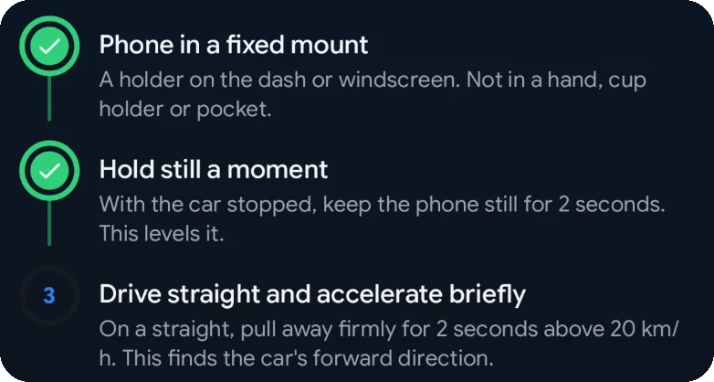
Phone sensors are part of DashLink Pro on the head unit. DashLink Wireless is free, for Android 7.0+ phones.
The phone app is free. When you want to keep Android Auto or everything after the trial, pay for the head unit right here. It’s switched on within 24 hours.
Open Go Premium on the head unit and scan its QR code with DashLink Wireless.
Checkout runs in Google Play on your phone. Pay once. Compare plans.
Once it’s switched on, tap Restore on the head unit while it’s connected to the internet.
GPX (opens in map and lap-timing apps), CSV for spreadsheets, and DashLink’s own data files. Track and rally sessions need Pro on the head unit.
A GPX or KML file, or a saved track with its pace notes, from your phone to the head unit.
Scan the QR code on your car’s screen to open DashLink Wireless on Google Play.
Yes, the phone app is free. Track and rally sessions and phone sensors need DashLink Pro on the head unit. You can buy Drive or Pro for the head unit from the app, and it’s switched on within 24 hours.
Not for USB. For wireless, DashLink Wireless helps phones start the connection.
No. Transfers go directly between your head unit and your phone over an encrypted link, with no account and no cloud.
Android phones on Android 7.0 or newer.
No. Your phone serves the pages over your Wi-Fi, or its own hotspot. It only runs while DashLink Wireless is open, and other devices need the 6-character code or the link with its key.